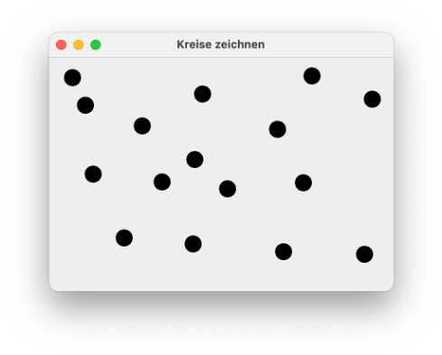
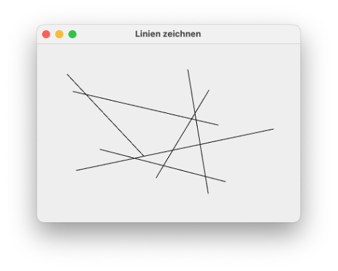

Mausereignisse¶
In der letzten Lektion haben wir uns angeschaut, wie wir eigene geometrische Objekte in einer GUI erzeugen können, d.h. wie haben "Zeichnen" in einer GUI gelernt. Um Zeichnen zu können, haben wir
- eine innere Klasse erstellt, die von
JPanelgeerbt hat, - darin die Methode
paintComponent()überschrieben und - in dieser Methode Objektmethoden der Klasse
Graphics2Daufgerufen, welche das Zeichnen von geometrischen Objekten ermöglichen.
Nun wollen wir uns anschauen, wie wir Ereignisse der Maus behandeln. Bei den Mausereignissen unterscheiden wir zwei Arten von Ereignissen:
- Ereignisse der Maus, die einmalig von der Maus ausgelöst werden. Dazu gehören die Ereignisse, wenn die linke Maustaste gedrückt wird, wenn die gedrückte Taste losgelassen wird, wenn sich die Maus auf eine Komponente bewegt, die sich an den Mauslistener angemeldet hat oder wenn der Mauszeiger diese Komponente wieder verlässt.
- Ereignisse der Maus, die durch Bewegung der Maus permanent ausgelöst werden. Dazu gehört die Mausbewegung selbst oder auch die Bewegung der Maus bei gedrückter Taste.
Die erste Art von Mausereignissen können wir behandeln, indem wir
- den
MouseListenerimplementieren und - eine Komponente (z.B. unsere
Canvas) an denMouseListeneranmelden.
Die zweite Art von Maus(-Bewegungs-)ereignissen können wir behandeln, indem wir
- den
MouseMotionListenerimplementieren und - eine Komponente (z.B. unsere
Canvas) an denMouseMotionListeneranmelden.
Wir starten wieder mit einem einfachen Beispiel, welches auf unserem Gründgerüst für das Zeichnen basiert:
1 2 3 4 5 6 7 8 9 10 11 12 13 14 15 16 17 18 19 20 21 22 23 24 25 26 27 28 29 30 31 32 33 34 35 36 37 | |
Der MouseListener¶
In dieser Klasse implementieren wir zunächst den MouseListener, d.h. wir fügen in den Klassenkopf implements MouseListener ein und lassen durch Eclipse die zu implementierenden Methoden einfügen:
1 2 3 4 5 6 7 8 9 10 11 12 13 14 15 16 17 18 19 20 21 22 23 24 25 26 27 28 29 30 31 32 33 34 35 36 37 38 39 40 41 42 43 44 45 46 47 48 49 50 51 52 53 54 55 56 57 58 59 60 61 62 63 64 | |
Wie wir sehen, sind es nun nicht mehr nur eine Methode, wie beim ActionListener, sondern gleich fünf Methoden, die wir implementieren können. Unsere zunächst einfachste Implementierung (aber zumindest am Anfang stets empfohlen!) ist die einfache Ausgabe auf die Konsole. Noch passiert aber nichts, denn wir dürfen nicht vergessen, uns an den MouseListener anzumelden!
Canvas meldet sich an den MouseListener an¶
Wir könnten nun das gesamte Fenster an den MouseListener anmelden. Dazu würden wir in den Konstruktor von Mausereignisse ein this.addMouseListener(this); einfügen. Damit würde this (also das Objekt von Mausereignisse, welches ja selbst ein JFrame ist) an den MouseListener angemeldet. Die Methode addMouseListener() erwartet ein Objekt der Implementierung von MouseListener. Das wäre ebenfalls this, da der MouseListener in der Klasse Mausereignisse implementiert ist.
Weil jedoch später der Umgang mit den Mausereignissen etwas leichter ist, wollen wir das Canvas-Objekt an den MouseListener anmelden. Es soll also nur die Zeichenfläche (geerbt von JPanel) an den MouseListener angemeldet werden und nicht das gesamte Fenster. Dazu speichern wir das Canvas-Objekt in eine Variable - und wir vereinfachen die Sache auch gleich ein bisschen, indem es keine lokale Variable im Konstruktor von Mausereignisse wird, sondern eine Objektvariable der Klasse. Diese Änderungen und das Anmelden von canvas an den MouseListener sehen so aus:
1 2 3 4 5 6 7 8 9 10 11 12 13 14 15 16 17 18 19 20 21 22 23 24 25 26 27 28 29 30 31 32 33 34 35 36 37 38 39 40 41 42 43 44 45 46 47 48 49 50 51 52 53 54 55 56 57 58 59 60 61 62 63 64 65 66 67 | |
Wir erstellen uns also eine Objektvariable canvas (Zeile 10), welche eine Referenz auf das Canvas-Objekt ist, das wir im Konstruktor erzeugen (Zeile 18). Diese Referenz übergeben wir dann auch der ContentPane (Zeile 20). Mithilfe der Methode addMouseListener() melden wir das Canvas-Objekt an den MouseListener an (Zeile 19). Da der MouseListener in der Klasse Mausereignisse implementiert ist, wird als Implementierung des MouseListeners this übergeben (Zeile 19).
Die Methoden des MouseListener¶
Nun ist der MouseListener implementiert und das Canvas-Objekt ist an den MouseListener angemeldet. Wir können nun die einzelnen Methoden des MouseListener ausprobieren:
mousePressed()wird aufgerufen, wenn die (linke) Maustaste heruntergedrückt wird. Drücken Sie die Maustaste und halten Sie sie gedrückt. In der Konsole erscheintmousePressed.mouseReleased()wird aufgerufen, wenn die (linke) Maustaste nach dem Drücken wieder losgelassen wird. Lassen Sie die Maustaste, nachdem auf der KonsolemousePressederschienen ist, wieder los. In der Konsole erscheintmouseReleased.mouseClicked()wird aufgerufen, wenn erstmousePressed()und dannmouseReleased()aufgerufen wurde.mouseClicked()beschreibt also die Kombination aus Maustaste gedrückt und Maustaste losgelassen - einen Maus-Klick also.mouseEntered()wird aufgerufen, wenn Sie den Mauszeiger auf die Komponente bewegen, die an denMouseListenerangemeldet ist. Wenn Sie in unserem Fall also die Maus in die Zeichenflächecanvasbewegen, dann wird die MethodemouseEntered()einmalig ausgeführt.mouseExited()wird aufgerufen, wenn Sie den Mauszeiger von der Komponente wieder wegbewegen, die an denMouseListenerangemeldet ist. Wenn Sie in unserem Fall also die Maus von der Zeichenfläche in die Titelleiste des Fensters oder ganz aus dem Fenster (derContentPane) bewegen, dann wird die MethodemouseExited()einmalig ausgeführt.
Übung
Probieren Sie intensiv aus, wann welche Methoden aufgerufen werden!
1. Schaffen Sie es, dass zwar mousePressed und danach mouseReleased auf der Konsole erscheint, nicht aber mouseClicked? Wann ist das der Fall?
2. Erzeugen Sie folgende Ausgabereihenfolge auf der Konsole: mousePressed, mouseExited, mouseReleased, mouseEntered!
Die Methoden des MouseMotionListener¶
Wir implementieren jetzt auch noch den MouseMotionListener. Wir dürfen erneut nicht die beiden Schritte vergessen:
- Implementieren des
MouseMotionListener(alsoimplements MouseMotionListener) und - Anmelden an den
MouseMotionListener(alsocanvas.addMouseMotionListener(this);)
1 2 3 4 5 6 7 8 9 10 11 12 13 14 15 16 17 18 19 20 21 22 23 24 25 26 27 28 29 30 31 32 33 34 35 36 37 38 39 40 41 42 43 44 45 46 47 48 49 50 51 52 53 54 55 56 57 58 59 60 61 62 63 64 65 66 67 68 69 70 71 72 73 74 75 76 77 78 79 80 81 82 83 84 85 86 87 | |
Beachten Sie, dass die Methoden mouseDragged() bzw. mouseMoved() permanent, d.h. bei jeder (kleinsten) Bewegung der Maus aufgerufen werden.
mouseMoved()wird bei jeder (kleinsten) Mausbewegung aufgerufen, wobei die Maustaste nicht gedrückt ist.mouseDragged()wird bei jeder (kleinsten) Mausbewegung aufgerufen, wobei die Maustaste gedrückt gehalten wird.
Wenn Sie anhand der Konsolenausgaben geprüft haben, dass die Methoden "funktionieren", dann können Sie dort die Konsolenausgaben auch wieder auskommentieren, da Ihre Konsole ansonsten zu "vollgeschreiben" wird.
Objektmethoden der Klasse MouseEvent¶
All diesen Methoden, sowohl vom MouseListener als auch vom MouseMotionListener wird ein MouseEvent als Parameter übergeben. Dieses Objekt besitzt einige nützliche Objektmethoden. Die wichtigsten dabei sind sicherlich die Auskünfte darüber, wo das Mausereignis ausgelöst wurde. Wir betrachten einige Objektmethoden des MouseEvent-Objekts am Beispiel der mouseClicked(MouseEvent e)-Methode (kommentieren Sie die Konsolenausgabe der beiden Methoden vom MouseMotionListener aus, damit Sie sich auf die Ausgabe von mouseClicked() konzentrieren können).
- die Methode
getX()gibt denx-Wert der Koordinate zurück, bei dem dasMouseEventstattgefunden hat. Die Koordinate bezieht sich auf die Komponente, die an denMouseListener(bzw.MouseMotionListener) angemeldet ist. Das ist auch der Grund, warum wir nicht das gesamte Fenster an denMouseListener(undMouseMotionListener) angemeldet haben. Der Punkt[x=0, y=0]befindet sich bei demCanvas-Objekt in der linken oberen Ecke derContentPane. Der Punkt mit den Koordinaten[x=0, y=0]beim Fenster ist der linke obere Punkt des Fensters, d.h. der linke obere Punkt der Titelleiste. - die Methode
getY()gibt deny-Wert der Koordinate zurück, bei dem dasMouseEventstattgefunden hat (Koordinate der Komponente). - die Methode
getPoint()gibt einPoint-Objekt (vonjava.awt) zurück. EinPoint-Objekt besitzt die sichtbaren Objektvariablenxundyfür die Koordinaten.
Wir probieren beide Möglichkeiten aus, die Koordinaten zu erfragen:
49 50 51 52 53 54 55 56 | |
Beide Ausgaben zeigen (natürlich) die gleichen Koordinaten an, z.B.
mouseClicked bei [x=388 ,y=215]
mouseClicked bei [x=388 ,y=215]
Beachten Sie, dass Sie in allen Methoden, in denen das MouseEvent übergeben wird, die Koordinaten des Ereignisses auslesen können. Für mouseMoved() sieht die Implementierung gleich aus. Die Ausgabe ist nur deutlich häufiger, da jede Mausbewegung (ohne gedrückte Maustaste) zum Aufruf der Methode führt.
90 91 92 93 94 | |
Beide Ausgaben zeigen (natürlich) die gleichen Koordinaten an, z.B.
mouseMoved bei [x=267 ,y=242]
mouseMoved bei [x=282 ,y=261]
mouseMoved bei [x=282 ,y=261]
mouseMoved bei [x=298 ,y=280]
mouseMoved bei [x=298 ,y=280]
mouseMoved bei [x=309 ,y=292]
mouseMoved bei [x=309 ,y=292]
Manchmal sind die Mausbewegungen, die ein Auslösen des Ereignisses zur Folge haben, sogar so klein, dass sich die Koordinaten gar nicht ändern.
Weiterhin kann mithilfe des MouseEvent-Objektes überprüft werden, ob während des auslösenden Mausereignisses eine besondere Taste auf der Tastatur gedrückt wurde, z.B. die Alt-Taste (linke option-Taste beim Mac), die AltGraph-Taste (rechte option-Taste beim Mac), die Ctrl-Taste, oder die Meta-Taste (Windows-Taste bzw. Apple-Taste):
49 50 51 52 53 54 55 56 57 58 59 60 61 62 | |
Probieren Sie die Maus-Klicks bei unterschiedlich gedrückter Taste auf der Tastatur aus!
Mithilfe der Objektmethode getClickCount() lässt sich die Anzahl die Klicks abfragen:
49 50 51 52 53 54 55 56 57 58 59 60 61 62 63 64 | |
Nochmal, weil es wichtig ist: alle diese Objektmethoden stehen allen Methoden zur Verfügung, denen ein MouseEvent übergeben wird. Wir können sie also in allen Methoden aus MouseListener und MouseMotionListener anwenden.
Zeichnen mit der Maus¶
Wir können nun zwei Sachen:
- Zeichnen und
- Mausereignisse behandeln.
Diese beiden Fähigkeiten wollen wir nun miteinander verbinden. Dazu zunächst einige theoretische Vorüberlegungen.
Model-View-Controller¶
Unter Model-View-Controller versteht man ein Entwurfsmuster (ein Design Pattern), welches ein wesentliches Konzept bei Anwendungen darstellt, die eine GUI besitzen. Wir werden es in diesem Semester nicht mehr schaffen, ausführlich auf dieses Konzept einzugehen, aber wir betrachten ein paar wesentliche Grundsätze daraus, die auch für unsere Anwendungen wichtig sind. Die Grundidee bei Model-View-Controlle (MVC) ist die Unterscheidung von drei Aufgaben:
- Das Model kümmert sich um die Datenverwaltung. Es gibt eine oder mehrere Datenstrukturen, in denen Daten gespeichert werden. Das Model kümmert sich darum, diese Datenstrukturen zu erstellen und Daten in diese Datenstrukturen einzufügen, zu ändern oder zu löschen.
- Der Controller verwaltet die Nutzerinteraktionen. Auf der Basis bestimmter Aktionen, die durch die Nutzerin verursacht werden (Mausklicks, Tatstureingaben, ...) stößt der Controller beim Model eine Änderung der der Datenverwaltung an (Daten hinzufügen, ändern oder löschen) und er stößt bei der View die Darstellung der Daten an. Der Controller hat also Zugriff auf das Model und auf die View.
- Die View kümmert sich um die Darstellung der Daten in der GUI. Die View hat also Zugriff auf das Model, denn die View verwendet die vom Model verwalteten Daten, um diese darzustellen.
Diese drei Aufgaben sollten möglichst losgelöst voneinander gelöst werden, d.h. es sollte möglichst keine Überschneidungen zwischen diesen Komponenten geben. Für uns ist es in diesem Zusammenhang wichtig, dass die paintComponent()-Methode unsere View ist. In der paintComponent()-Methode können wir zeichnen, d.h. Daten visualisieren. Wir sollten
- keine weitere Methode (außer die
paintComponent()-Methode) haben, die etwas zeichnet und wir sollten - in der
paintComponent()-Methode keine Verwaltung von Daten durchführen.
Unser Controller ist die Implementierung der Listener, je nachdem, welche Nutzerinteraktionen wir unterstützen und behandeln wollen, also z.B. ActionListener, MouseListener und/oder MouseMotionListener.
Unsere Herausforderung ist nun, ein Model zu erstellen. Dazu müssen wir stets überlegen, welche Daten wir benötigen, damit die View (die paintComponent()-Methode) die Objekte zeichnen kann, die gewünscht sind.
Wir wollen diese theoretischen Überlegungen an einigen Beispielen erläutern.
Beispiel 1: Kreise zeichnen¶
Unser erstes Beispiel ist einfach. Wir wollen mit der Maus in unsere Canvas klicken und dort, wo wir hingeklickt haben, soll ein schwarzer, ausgefüllter Kreis erscheinen. Alle Kreise haben den gleichen (einen festen) Durchmesser. Dazu folgende Überlegungen:
- View: in der
paintComponent()-Methode können wir z.B. mithilfe derfillOval()-Methode Kreise zeichnen. Wir müssen nur die Koordinatenxundykennen, an denen der jeweilige Kreis gezeichnet werden soll. - Controller: um zu wissen, wo wir mit der Maus in die
Canvasgeklickt haben, müssen wir denMouseListenerimplementieren. - Model: wir müssen Koordinaten speichern, also entweder
int-Wertexundyoder gleich Objekte vom TypPoint. Wir entscheiden uns für Letzteres. Da wir nicht wissen, wie vielePoint-Objekte gespeichert werden sollen, kommt einArraynicht in Frage. Wir benötigen EineCollection. Hier ist es egal, obListoderSet. Wir entscheiden uns fürList.
Wir starten erneut mit unserem Grundgerüst für das Zeichnen, haben dort aber bereits den MouseListener implementiert:
1 2 3 4 5 6 7 8 9 10 11 12 13 14 15 16 17 18 19 20 21 22 23 24 25 26 27 28 29 30 31 32 33 34 35 36 37 38 39 40 41 42 43 44 45 46 47 48 49 50 51 52 53 54 55 56 57 58 59 60 61 62 63 64 | |
Im Sinne des Controllers sind wir nur daran interessiert, die mouseClicked()-Methode des MouseListener zu implementieren, aber natürlich müssen die anderen Methoden des MouseListener auch "implementiert" werden, ansonsten bliben sie abstrakt und somit die ganze Klasse. Wir lassen sie aber leer.
Wir fügen nun das Model ein, nämlich eine Liste aus lauter Punkten, d.h. ein List<Point, die wir points nennen. Wir erzeugen die Liste im Konstruktor der Klasse, da wir sowohl in mouseClicked(), als auch in paintComponent() auf diese Liste zugreifen wollen, deklarieren wir sie als globale Variable.
1 2 3 4 5 6 7 8 9 10 11 12 13 14 15 16 17 18 19 20 21 22 23 24 25 26 27 28 29 30 31 32 33 34 35 36 37 38 39 40 41 42 43 44 45 46 47 48 49 50 51 52 53 54 55 56 57 58 59 60 61 62 63 64 65 66 67 68 69 70 71 72 73 74 75 76 77 | |
Wir betrachten die Änderungen im Detail:
- Die Klasse
Pointexistiert injava.awt-Paket und muss von dort importiert werden (Zeile3). - Die Klasse
Listgibt es zwei Mal! Wir wollen hier dieCollectionverwenden und nutzen deshalb die KlasseListaus demjava.util-Paket. Hier müssen Sie aufpassen, dass Sie die richtigeList-Klasse importieren (Zeile7). - Die Klasse
ArrayListist aber eindeutig und wird aus demjava.util-Paket importiert (Zeile6). - In Zeile
14wird die globale Variablepointsvom TypList<Point>deklariert. Sie muss global sein, damit wir sowohl in dermouseClicked()-, als auch in derpaintComponent()-Methode darauf Zugriff haben. - In Zeile
22erzeugen wir ein Objekt der KlasseArrayListfür diepoints-Referenz. - In Zeile
34erstellen wir eine KonstanteDURCHMESSER, mit der wir den Durchmesser der Kreise festlegen, die wir durch die Maus-Klicks erzeugen wollen. Hier ist es Geschmackssache, ob sie diese Konstante alsstaticdeklarieren oder nicht. Die Unterscheidung liegt darin, ob Sie allen Objekten ausCanvasdiesen Wert mitgeben sollen oder ob jedesCanvas-Objekt "seinen eigenen"DURCHMESSERhaben soll. Da wir eh nur ein Objekt vonCanvaserzeugen, macht es hier keinen Unterschied. - In den Zeilen
43-46wird die DatenstrukturListausgelesen und jeder einzelnePointdarin verwendet, um einen Kreis an diese Stelle zu zeichnen. Hier greift die View auf das Model zu (aber nur lesend!). Hier ist also unsere einzige Verbindung zwischen Model und View. Es sei an dieser Stelle angemerkt, dass die View das Model auch dazu verwenden könnte, um z.B. Quadrate mit der Größe100x100zu zeichnen oder rote Kreise oder ... Insofern ist das Model unabhängig von der View und genau das wollen wir auch erreichen. Wir sehen hier auch den Zugriff auf eine Objekteigenschaft von der inneren in die äußere Klasse. Um auf die Objekteigenschaftpointsder äußeren Klasse zuzugreifen, schreiben wirKreiseZeichnen.this.points(siehe auch ) - In Zeile
60wird die Liste (also das Model) durch die Interaktionen der Nutzerin (also durch den Controller) befüllt. Immer dort, wohin mit der Maus geklickt wird, wird dieserPointin der Datenstruktur Liste (also im Model) gespeichert. Hier sehen wir die einzige Verbindung zwischen Controller und Model. Der Controller greift auf das Model zu und stößt das Speichern eines Datums an. - Zeile
62ist sehr wichtig und wird häufig vergessen. Hier "triggert" der Controller die View. Wenn wir uns an die Einführung des Zeichnens erinnern, dann wird ein Fenster mit allen seinen Komponenten "gezeichnet". Wenn wir dieCanvasmit neuen Kreisen "befüllen", dann bewirkt das nicht automatisch ein Neuzeichnen derCanvas. Ein Neuzeichnen würde nur erfolgen, wenn wir bspw. die Fenstergröße ändern oder das Fenster in die Taskleiste bewegen und wieder öffnen. Um ein Neuzeichnen aus dem Programm heraus anzustoßen, benötigen wir die Methoderepaint(). Wir hätten auchthis.repaint();angeben können, dann wäre das gesamte Fenster neu gezeichnet worden (inkl. derCanvas). Mitthis.canvas.repaint();wird "nur" dieCanvasneu gezeichnet.

Übung
- Ändern Sie das Programm so, dass die Punkte als Mittelpunkte der Kreise verwendet werden!
- Ändern Sie das Programm so, dass rote Quadrate der Größe
30x30anstelle der schwarzen Kreise gezeichnet werden! - Ändern Sie das Programm so, dass die Punkte nur durch einen Doppelklick der Maus erfasst werden (einfacher Mausklick genügt nicht)!
Beispiel 2: Linien zeichnen¶
In unserem zweiten Beispiel wollen wir Linien zeichnen. Dabei soll das Vorgehen so sein:
- Wir klicken mit der Maus und legen dabei den Anfangspunkt der Linie fest.
- Wir halten die Maustaste gedrückt und bewegen bei gedrückter Maustaste die Maus. Dabei wird die Linie bereits gezeichnet.
- Wir lassen die Maustaste los. dadurch steht der Endpunkt der Linie fest.
Für Punkt 1. implementieren wir die Methode mousePressed() und wir benötigen somit den MouseListener.
Für Punkt 2. implementieren wir die Methode mouseDragged() und wir benötigen somit den MouseMotionListener.
Für Punkt 3. implementieren wir die Methode mouseReleased() aus dem MouseListener.
Wir starten erneut mit unserem Grundgerüst für das Zeichnen, haben dort aber bereits den MouseListener und den MouseMotionListenerimplementiert und die Methoden, die uns nicht interessieren, zusammengekürzt:
1 2 3 4 5 6 7 8 9 10 11 12 13 14 15 16 17 18 19 20 21 22 23 24 25 26 27 28 29 30 31 32 33 34 35 36 37 38 39 40 41 42 43 44 45 46 47 48 49 50 51 52 53 54 55 56 57 58 59 60 61 62 63 64 65 66 67 68 | |
Wir überlegen uns nun das Model. Dies ist etwas komplexer, als das Model für das Zeichnen der Kreise. Es gibt
- gespeicherte Linien. Diese Linien sind bereits fertig erstellt. Diese Linien sollten in einer
Collectiongespeichert werden. Es bietet sich wieder eine Liste an (Menge ginge auch). Das Typisieren dieser Liste liegt jedoch nicht auf der Hand, da es im Gegensatz zuPointkeine Klasse für eineLiniegibt, die wir benutzen könnten. Müssen wir uns also selber schreiben. - eine aktuelle Linie. Das ist die Linie, die gerade gezeichnet wird. Diese Linie ist noch nicht gespeichert, d.h. die Maustaste wurde noch nicht losgelassen. Es kann auch sein, dass aktuell keine Linie gezeichnet wird, dann ist der Wert dafür
null. Auch diese aktuelle Linie sollte vom TypLiniesein, den wir uns zunächst erstellen.
1 2 3 4 5 6 7 8 9 10 11 12 13 14 15 16 17 18 19 20 21 22 23 24 25 26 27 28 29 30 31 32 | |
Mit dem Konstruktor können wir uns ein Objekt von Linie erstellen (im Controller bei mousePressed()) und haben dann mithilfe von setEnde() die Möglichkeit, den Endpunkt der Linie noch zu ändern (im Controller bei mouseDragged(). Die Getter benötigen wir in der View, um die Werte der Start- und Endpunkte der Linie auszulesen.
Wir beginnen zunächst damit, eine Linie zu erzeugen:
1 2 3 4 5 6 7 8 9 10 11 12 13 14 15 16 17 18 19 20 21 22 23 24 25 26 27 28 29 30 31 32 33 34 35 36 37 38 39 40 41 42 43 44 45 46 47 48 49 50 51 52 53 54 55 56 57 58 59 60 61 62 63 64 65 66 67 68 69 70 71 72 73 74 75 76 77 78 79 80 81 | |
- Die Variable
aktLinieist global, weil wir sowohl in den Methodenmousepressed()undmouseDraggedals auch inpaintComponent()darauf zugreifen wollen (Zeile13). - In der
paintComponent()-Methode (unserer View) lesen wir dieseLinieaus, um sie grafisch als Linie darzustellen. Der Zugriff auf die Eigenschaften des ObjektesaktLinieerfolgt aber nur, wennaktLinieauch tatsächlich auf ein Objekt zeigt. Wir prüfen deshalb zunächst, obaktLinienichtnullist (Zeile40). - Nachdem wir die
x- undy-Werte desstart- und desende-Punktes deraktLinieausgelesen haben (Zeilen42-45), stellen wir eine Linie grafisch mithilfe derdrawLine()-Methode dar. - Das Objekt einer
Liniewird in dermousePressed()-Methode erstellt. Derstart- und derende-Punkt dieserLiniesind zunächst gleich (die Linie ist also am Anfang nur ein Punkt) - Zeile61. - Wenn wir bei gedrückter Maustaste die Maus bewegen, wird permanent die
mouseDragged()-Methode aufgerufen. Dort setzen wir die aktuelle Position der Maus als neuenende-Punkt vonaktLinie(Zeile67). - Zeile
69ist wieder sehr wichtig (und wird häufig vergessen). Hier "triggert" der Controller die View. Wenn wir dieCanvasmit einer neuen Linie "befüllen", dann bewirkt das nicht automatisch ein Neuzeichnen derCanvas. Das Neuzeichnen erfolgt erst durch den Aufrufthis.canvas.repaint();.
Wir können nun viele Linien zeichnen, aber diese werden noch nicht gespeichert. Zum Speichern der Linien benötigen wir wieder eine Collection. Das Speichern der aktuellen Linie in diese Collection erfolgt in dem Moment, indem wir die Maustaste wieder loslassen, also in mouseReleased(). Die Collection muss wieder global verfügbar sein.
1 2 3 4 5 6 7 8 9 10 11 12 13 14 15 16 17 18 19 20 21 22 23 24 25 26 27 28 29 30 31 32 33 34 35 36 37 38 39 40 41 42 43 44 45 46 47 48 49 50 51 52 53 54 55 56 57 58 59 60 61 62 63 64 65 66 67 68 69 70 71 72 73 74 75 76 77 78 79 80 81 82 83 84 85 86 87 88 89 90 91 92 93 94 95 96 | |

Übung
- Ändern Sie das Programm so, dass nicht Linien gezeichnet werden, sondern Kreise! Ändern Sie aber nur die View, d.h. die
paintComponent(). Die gespeichertenLiniengeben den Durchmesser der Kreise an.